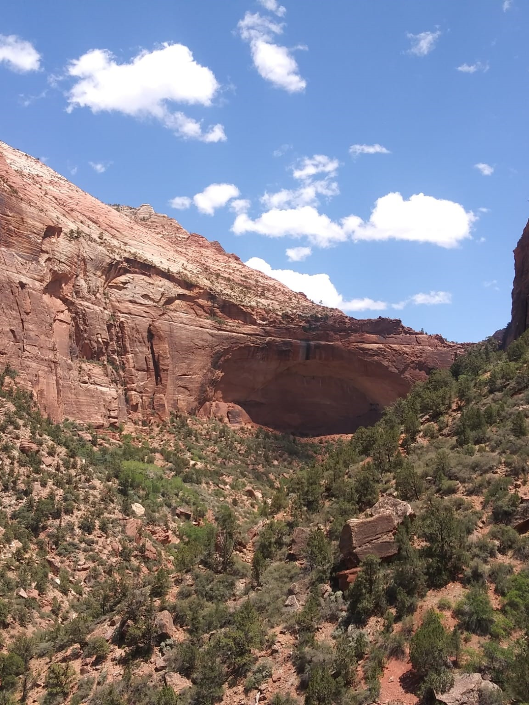

"Ad Astra, per aspera."
Hello!
Technology enthusiast, recently graduated from the College of Southern Nevada with strong academics. Keen to pursue a career in Software programming or IT with a focus on problem solving. Good team member, organized, and process-oriented person.
I'm originary from Mexico, and while I lived most of my life there I currently reside in the United States. I am currently looking for opportunities to get into the world of Technology and the work force in general. Even if I already finished an associates degree, I continue to find other ways to keep improving.
Academics
I recently graduated from the College of Southern Nevada with an associates degree of applied science in software programming . The most relevant classes were advanced C++ programming, project management, networking and hardware essentials.
I finished High school in Liberty High School, earned an advanced diploma along with an academic award for outstanding grades. I was only there for a year since I did most of my high school years in Mexico.
Aside from education I have also had experience working in a kitchen as a dishwasher which makes me appreciate where I am now, I'm fortunate to be able to continue to pursue my education and I hope that I manage to make it into the tech world.
Experience
I have experience with programing languages such as C++, C and Java for back end software, and Python with Flask and JavaScript for front end development. I'm comfortable with relational databases, mainly using SQLite for personal projects. Currently trying to get better in algorithms and data structures (Leetcode) and Linux command lines.
If you are interested in my projects click here!
Certifications
-
NDG Linux Essentials, Cisco Networking Academy, 30 Nov 2023
-
CS50x: "Harvard University’s introduction to computer science", Nov 2024
-
Technical Skills
Programming in Languages such as C, C++, java, and Python.
Building Websites and web applications using HTML, CSS, JavaScript and Python.
Familiarity with hardware and networking.
Database management.
-
Soft Skills
Problem Solving.
Adaptability to new ways of programming or thinking.
Communication in both english and spanish with high proficiency.
Self-motivated, independent and willing to grow and change.
-
Professional Skills
Knowledge of hardware and software.
Presenting information in time and form.
Time management, planing and executing tasks effectively.
Conflict resolution.
-
Hobbies and Interests
Hiking and walking around.
Music, I used to play the transverse flute but I also enjoy discovering new tunes.
Videogames, I would like to make one.
Photography, I enjoy taking pictures, they are not good but I still enjoy it.
Gallery
Now allow me to share some of the places I've been in the past few years. Note that anything past this point is mostly about me rather than my qualifications or my profession. This is a collection of pictures of places that have somehow influenced who I am today and that hold a special place in my memories (both in my mind and my computers memory).
Cauldron Lake, Washington, USA
Dock at the main avenue of bright falls in cauldron lake. The town is known for its festivities and hospitality. The area can get quite active, specially during the "deerfest".
The tree that rises above all other flora in the forest is said to be the place where fiction meets reality.
The forests surrounding the lake tend to flood quite quickly when the rain comes. Rain is nature's way of cleansing impurities. Of taking back what belongs to it.
The lake is place to an active volcano observatory. Scientist and artists come together to enjoy the sights.
"There lied a deeper, darker ocean green, with waves both wilder and more serene..."
When the Bright falls, the night springs
Cauldron Lake is a caldera lake in the mountains of the U.S. state of Washington. It is the eighth deepest lake in the world, formed from a volcanic crater. The lake has been the subject of much folklore throughout history and local Native American tribes regarded it as a gateway to the underworld, though it is unknown whether they knew of its power.
If you did not notice that these pictures were not from a real place I would not blame you. This picturesque location is from the videogame Alan Wake II, a game that I consider to be an amazing feat of technological and artistical achievement. I really admire the develpers at Remedy Entertainment, this and some other games and studios have really peaked my interest on how videogames are made and how they went from being considered "childlike" to being possibly the one media that can combine all other elements of art and make it into something memorable.
Heroica Puebla de Zaragoza, Puebla, México
Colonial charm
The city of puebla is home to one of the most famous battlefields in Mexican history. This city is a wonderful mix of old and new, having more than 200 years of history since its foundation , it is home to many post-hispanic buildings that now serve as tourist attractions.
The place is also home to natural wonders such as the Popocatepetl and iztaccihuatl active volcanos, the uneven nature of the terrain makes for a good rollercoaster when travelling in car. This also offers multiple vantage points for tourists to climb and enjoy the sights.
My review? Really nice 10/10.
Clark County, Nevada, USA
-
-

-
-
-
Cancun, Quintana Roo, México
Culture
Former Home of the Mayan civilization, the penninsula of Yucatan is host to many buildings and artifacts left by past civilizations. The mayan culture is rich in tradition and spirituality, as most of the pyramids founds were the place of important rituals and ceremonies.
Tourism
Cancun has made a name for itself as a place for tourism, the culture, natural beauty, and entertainment have put this city as the defacto place to visit in Mexico. It offers something for everyone and I was really lucky to live there for many years.
Nature
This place offers a retreat from the urban, it is a city that thrives mostly on its natural resources such as the stunning beaches, colorful reef and abundant flora and fauna that await within the rainforest. Towns within the Rivera offer all sorts of activities for the so called "ecotourism".
Significance
Cancun is the city where I grew up, I lived my entire childhood and teenage years in there. I have fond memories of the beach. The tropical climate and the sound of the waves makes me feel at home. Now that I live in another country I have been feeling a little homesick.
"I've never quite realized... how beautiful this world is."